Scattering problems by electrically large objects are of wide interest in many fields. The numerical computation of such problems remains limited by computer resources, due to the large number of unknowns, especially when inhomogeneous materials are present. Domain decomposition methods (DDM) are particularly attractive for the solution of large finite elements problem. It is decomposed into several coupled sub-problems which can be solved independently, thus reducing considerably the memory storage requirements. Moreover, DDM are intrinsically well suited for numerical implementation on parallel computers.
The key point of these methods is how the sub-domains are coupled to each other, i.e. which transmission conditions are imposed on the interfaces between two sub-domains. The most commonly used transmission condition in electromagnetism is the one proposed by Després in [B. Després, SIAM, 197-206, 1993] or higher order ones [see e.g. M. Gander et al., SIAM JSC, 24, 38-60, 2002]. But these transmission conditions are local (i.e. expressed in terms of tangential differential operators) and generally lead to an arithmetic convergence of an domain decomposition iterative process.
We introduce new transmission conditions based on specific linear operators
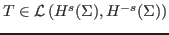
for some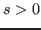
: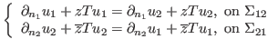 |
(1) |
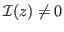
, then our transmission conditions are equivalent to the exact transmission conditions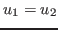
, and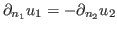
. Let us remark that this general framework contains most of the iterative methods proposed in the litterature: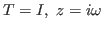
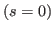
, one recovers the original method introduced by Després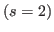
, one gets the higher order transmission conditions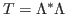
, where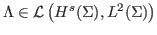
.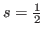
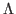
) in terms of differential or local operators. To build an explicit operator verifying the assumptions, we use non local integral kernels as suggested by Riesz potential: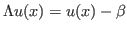 div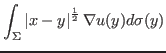 |
(2) |
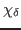
such that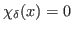
for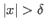
and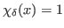
for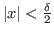
. The operator becomes:| div 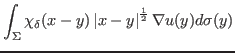 |
(3) |
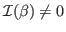
, the operator verifies all the conditions required to achieve exponential convergence of an iterative method such as Jacobi, Gauss-Seidel or GMRES. At the conference, several numerical experiments will be presented to show the influence of our transmission conditions on the eigenvalues of the problem as well as on the convergence rate of different iterative methods. We shall also investigate, analytically and numerically, how to tune the different parameters (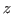
,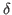
) to optimize the rate of convergence.